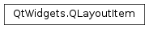

QLayoutItem¶
Inherited by: QWidgetItem, QSpacerItem, QLayout, QGridLayout, QBoxLayout, QHBoxLayout, QVBoxLayout, QStackedLayout, QFormLayout
Synopsis¶
Functions¶
- def
alignment() - def
setAlignment(a)
Virtual functions¶
- def
controlTypes() - def
expandingDirections() - def
geometry() - def
hasHeightForWidth() - def
heightForWidth(arg__1) - def
invalidate() - def
isEmpty() - def
layout() - def
maximumSize() - def
minimumHeightForWidth(arg__1) - def
minimumSize() - def
setGeometry(arg__1) - def
sizeHint() - def
spacerItem() - def
widget()
Detailed Description¶
The
PySide2.QtWidgets.QLayoutItemclass provides an abstract item that aPySide2.QtWidgets.QLayoutmanipulates.This is used by custom layouts.
Pure virtual functions are provided to return information about the layout, including,
PySide2.QtWidgets.QLayoutItem.sizeHint(),PySide2.QtWidgets.QLayoutItem.minimumSize(),PySide2.QtWidgets.QLayoutItem.maximumSize()and expanding().The layout’s geometry can be set and retrieved with
PySide2.QtWidgets.QLayoutItem.setGeometry()andPySide2.QtWidgets.QLayoutItem.geometry(), and its alignment withPySide2.QtWidgets.QLayoutItem.setAlignment()andPySide2.QtWidgets.QLayoutItem.alignment().
PySide2.QtWidgets.QLayoutItem.isEmpty()returns whether the layout item is empty. If the concrete item is aPySide2.QtWidgets.QWidget, it can be retrieved usingPySide2.QtWidgets.QLayoutItem.widget(). Similarly forPySide2.QtWidgets.QLayoutItem.layout()andPySide2.QtWidgets.QLayoutItem.spacerItem().Some layouts have width and height interdependencies. These can be expressed using
PySide2.QtWidgets.QLayoutItem.hasHeightForWidth(),PySide2.QtWidgets.QLayoutItem.heightForWidth(), andPySide2.QtWidgets.QLayoutItem.minimumHeightForWidth(). For more explanation see the Qt Quarterly article Trading Height for Width.See also
-
class
PySide2.QtWidgets.QLayoutItem([alignment=Qt.Alignment()])¶ Parameters: alignment – PySide2.QtCore.Qt.AlignmentConstructs a layout item with an
alignment. Not all subclasses support alignment.
-
PySide2.QtWidgets.QLayoutItem.align¶
-
PySide2.QtWidgets.QLayoutItem.alignment()¶ Return type: PySide2.QtCore.Qt.AlignmentReturns the alignment of this item.
-
PySide2.QtWidgets.QLayoutItem.controlTypes()¶ Return type: PySide2.QtWidgets.QSizePolicy.ControlTypesReturns the control type(s) for the layout item. For a
PySide2.QtWidgets.QWidgetItem, the control type comes from the widget’s size policy; for aPySide2.QtWidgets.QLayoutItem, the control types is derived from the layout’s contents.See also
-
PySide2.QtWidgets.QLayoutItem.expandingDirections()¶ Return type: PySide2.QtCore.Qt.OrientationsReturns whether this layout item can make use of more space than
PySide2.QtWidgets.QLayoutItem.sizeHint(). A value ofQt.VerticalorQt.Horizontalmeans that it wants to grow in only one dimension, whereasQt.Vertical|Qt.Horizontalmeans that it wants to grow in both dimensions.
-
PySide2.QtWidgets.QLayoutItem.geometry()¶ Return type: PySide2.QtCore.QRectReturns the rectangle covered by this layout item.
-
PySide2.QtWidgets.QLayoutItem.hasHeightForWidth()¶ Return type: PySide2.QtCore.boolReturns
trueif this layout’s preferred height depends on its width; otherwise returnsfalse. The default implementation returns false.Reimplement this function in layout managers that support height for width.
-
PySide2.QtWidgets.QLayoutItem.heightForWidth(arg__1)¶ Parameters: arg__1 – PySide2.QtCore.intReturn type: PySide2.QtCore.intReturns the preferred height for this layout item, given the width, which is not used in this default implementation.
The default implementation returns -1, indicating that the preferred height is independent of the width of the item. Using the function
PySide2.QtWidgets.QLayoutItem.hasHeightForWidth()will typically be much faster than calling this function and testing for -1.Reimplement this function in layout managers that support height for width. A typical implementation will look like this:
def heightForWidth(self, w): if cache_dirty or cached_width != w: h = calculateHeightForWidth(w) self.cached_hfw = h return h return cached_hfw
Caching is strongly recommended; without it layout will take exponential time.
-
PySide2.QtWidgets.QLayoutItem.invalidate()¶ Invalidates any cached information in this layout item.
-
PySide2.QtWidgets.QLayoutItem.isEmpty()¶ Return type: PySide2.QtCore.boolImplemented in subclasses to return whether this item is empty, i.e. whether it contains any widgets.
-
PySide2.QtWidgets.QLayoutItem.layout()¶ Return type: PySide2.QtWidgets.QLayoutIf this item is a
PySide2.QtWidgets.QLayout, it is returned as aPySide2.QtWidgets.QLayout; otherwise 0 is returned. This function provides type-safe casting.
-
PySide2.QtWidgets.QLayoutItem.maximumSize()¶ Return type: PySide2.QtCore.QSizeImplemented in subclasses to return the maximum size of this item.
-
PySide2.QtWidgets.QLayoutItem.minimumHeightForWidth(arg__1)¶ Parameters: arg__1 – PySide2.QtCore.intReturn type: PySide2.QtCore.intReturns the minimum height this widget needs for the given width,
w. The default implementation simply returnsPySide2.QtWidgets.QLayoutItem.heightForWidth()(w).
-
PySide2.QtWidgets.QLayoutItem.minimumSize()¶ Return type: PySide2.QtCore.QSizeImplemented in subclasses to return the minimum size of this item.
-
PySide2.QtWidgets.QLayoutItem.setAlignment(a)¶ Parameters: a – PySide2.QtCore.Qt.AlignmentSets the alignment of this item to
alignment.Note
Item alignment is only supported by
PySide2.QtWidgets.QLayoutItemsubclasses where it would have a visual effect. Except forPySide2.QtWidgets.QSpacerItem, which provides blank space for layouts, all public Qt classes that inheritPySide2.QtWidgets.QLayoutItemsupport item alignment.
-
PySide2.QtWidgets.QLayoutItem.setGeometry(arg__1)¶ Parameters: arg__1 – PySide2.QtCore.QRectImplemented in subclasses to set this item’s geometry to
r.
-
PySide2.QtWidgets.QLayoutItem.sizeHint()¶ Return type: PySide2.QtCore.QSizeImplemented in subclasses to return the preferred size of this item.
-
PySide2.QtWidgets.QLayoutItem.spacerItem()¶ Return type: PySide2.QtWidgets.QSpacerItemIf this item is a
PySide2.QtWidgets.QSpacerItem, it is returned as aPySide2.QtWidgets.QSpacerItem; otherwise 0 is returned. This function provides type-safe casting.
-
PySide2.QtWidgets.QLayoutItem.widget()¶ Return type: PySide2.QtWidgets.QWidgetIf this item manages a
PySide2.QtWidgets.QWidget, returns that widget. Otherwise,nullptris returned.Note
While the functions
PySide2.QtWidgets.QLayoutItem.layout()andPySide2.QtWidgets.QLayoutItem.spacerItem()perform casts, this function returns another object:PySide2.QtWidgets.QLayoutandPySide2.QtWidgets.QSpacerIteminheritPySide2.QtWidgets.QLayoutItem, whilePySide2.QtWidgets.QWidgetdoes not.
© 2018 The Qt Company Ltd. Documentation contributions included herein are the copyrights of their respective owners. The documentation provided herein is licensed under the terms of the GNU Free Documentation License version 1.3 as published by the Free Software Foundation. Qt and respective logos are trademarks of The Qt Company Ltd. in Finland and/or other countries worldwide. All other trademarks are property of their respective owners.